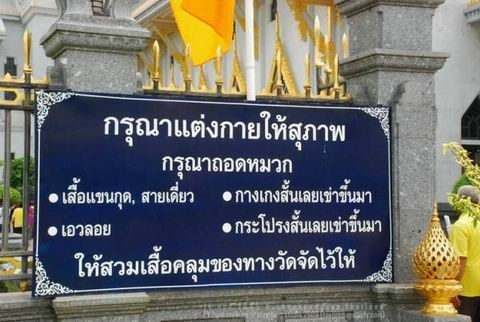
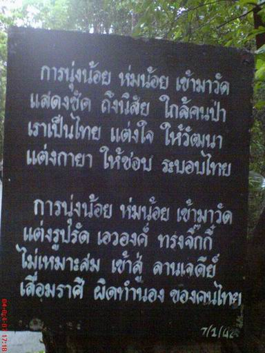

|

ผู้หญิงเข้าวัดแต่แต่งตัวไม่สำรวม
ผู้หญิงที่เข้าวัดแต่แต่งตัวไม่สำรวมอวดเนื้อหนังให้พระหวั่นไหวต่อไปจะได้รับ
ผลกรรมอย่างไร... ?
ขอบเขตของคำถามที่ว่า
แต่งกายไม่สำรวม เข้าวัดนั้น อาจทำให้เพ่งโทษคับแคบ ต้องค่อย ๆ
มองให้คลุมข้อเท็จจริงตามลำดับครับ
โดยความเป็นเพศหญิง
มีธรรมชาติดึงดูดใจ หรือล่อตาอยู่ในตัวเองเดิน ๆ ไปถ้าเป็นที่สนใจได้ก็ถือว่ามีรูปสมบัติอันพึงมีสมเพศตนถ้าวันไหนแต่งองค์ทรงเครื่องได้ถึงขนาดชายหญิงมองเหลียวหลังกันทั่วทุกหัวระแหงก็จะยิ่งภาคภูมิเต็มอิ่มประมาณเดียวกับที่นักวิ่งเข้าเส้นชัยได้เป็นคนแรกทีเดียว
ฉะนั้นผู้หญิงที่รูปร่างหน้าตาดีเกือบทุกคนจึงอดไม่ได้กับการอยากทดสอบเสน่ห์ของตนแล้ว
อะไรจะเป็นเครื่องทดสอบได้ดีไปกว่าผู้ประกาศตนว่าสละเรื่องทางเพศแล้วไม่สนใจเพศหญิงอีกแล้ว
สมัยนี้พระทั่วไปไม่ใช่เครื่องทดสอบที่น่าท้าทายอะไรนักเนื่องจากข่าวฉาวที่ประดังเข้าหูเข้าตาผ่านหน้าหนังสือพิมพ์แทบไม่เว้นแต่ละวันทำให้ผู้หญิงยุคใหม่มองพระไม่ต่างจากชายนุ่งกางเกงนอกวัดทั้งหลายหากทำให้สนใจได้ยังไม่ถือว่าแน่อะไรนัก
เท่าที่ทราบจากคำให้การของสาว ๆ ส่วนใหญ่จะรู้สึกสมเพชและนึกดูถูกพระที่ไม่สำรวมเพ่งเล็งตนด้วยสายตากรุ้มกริ่มตั้งแต่แรกเห็นยิ่งกว่าสมเพชและดูถูกผู้ชายทั่วไปมากเนื่องจากใส่เครื่องแบบที่ควรจะมีสง่าราศีเยี่ยงภิกษุผู้อิ่มแล้วแต่กลับทำตัวกระจอกไม่ต่างจากนักโทษที่หิวโซ

แต่หากกลับเป็นตรงข้ามถ้าเป็นพระชื่อดัง
ที่มีคนร่ำลือว่าเป็นผู้สงบ เป็นผู้สำรวมการทำให้ ท่านสนใจได้
นับว่าน่าภาคภูมิใจเป็นพิเศษระดับความอยากให้สนใจก็ต่าง ๆ กันไปตามพื้นความคิดความอ่านของผู้หญิงแต่ละคน
เท่าที่ได้ทราบจากปากของผู้หญิงคนหนึ่ง ซึ่งตั้งใจสละโลกและเข้าประพฤติปฏิบัติธรรมอย่างเต็มที่
เธอยอมรับว่ารู้สึกผิดและละอายคือพออยู่ ๆ ในวัดไปแล้วอดไม่ได้เห็นชายที่เคร่ง
ๆ แล้วอยากลองเสียหน่อยว่าเขาจะทนเสน่ห์เธอไหวไหมในระดับของเธอ
ก็จัดได้ว่ามีสติดีและยอมรับตามจริงมากพอที่จะเห็นแม้อาการตั้งใจเล็ก
ๆ น้อย ๆ ของตน เช่น ชม้ายตาหรือไม่มีอะไรเลยก็เดินด้วยความรู้สึกเป็นเป้าล่อความสนใจของผู้เคร่งในธรรมธรรมดาผู้หญิงที่เคยถูกจับจ้องมามากจะสำเหนียกรู้ได้ว่ากำลังมีผู้ชายสนใจตนอยู่หรือเปล่าและเป็นการแอบชำเลืองหรือเพ่งเล็งเขม็งเป็นความสนใจด้วยความชื่นชมหรือเจืออยู่ด้วยราคะและราคะนั้นถึงขั้นหื่นกระหายหมดรูปหรือว่าเป็นเพียงความวาบหวามแบบอ่อน
ๆ
หากทำได้ครั้งหนึ่งก็นึกยินดี
หรือนึกภูมิใจว่าตนแน่ยิ่งพระที่ขึ้นชื่อว่าปลอดกิเลสเท่าไร ยิ่งอยากทำให้สนใจตนมากขึ้นเท่านั้นแต่หากปลูกฝังจิตสำนึกในทางละอายเอาไว้ก่อนก็จะรู้สึกผิดรุนแรงที่ทำเรื่องไม่งาม
ไม่สมควร หรือบางคนยั่วให้สนใจสำเร็จเห็นพระทำตาหวานใส่ ก็พานเกลียดชัง
พานสาปส่ง หมดความนับถือไปเลยไม่เหลือเกียรติให้ต้องเคารพกันอีก
และไม่คิดหวนกลับไปทำบุญที่วัดนั้นตลอดชีวิตนี่นับเป็นความขัดแย้งในตัวเองที่น่าปวดหัว
ที่กล่าวมาคือหญิงผู้มีสำนึกในธรรมแล้วนะครับตั้งใจจะเดินบนเส้นทางสีขาวแน่นอนแล้วยังเจอเรื่องมิติมืดภายในตนเล่นงานให้ย่ำแย่เข้าได้
แล้วผู้หญิงธรรมดาโดยเฉพาะเด็กรุ่นใหม่ที่เกิดมาพร้อมกับการรับรู้ข่าวคาว
ๆ ฉาว ๆ ของพระล่ะ?
เท่าที่ทราบแนวโน้มของสาวรุ่นใหม่จะไม่มีความรู้สึกเกี่ยวกับเครื่องแบบที่เหมาะหรือไม่เหมาะกับเขตวัดถ้าเพิ่งเข้าวัดใหม่
ๆ หรือนาน ๆ เข้าวัดทีจะนึกไม่ถึงว่าเสื้อยืดและกางเกงรัดรูปที่แต่งกันเป็นปกติ
นั้นอาจมีความยั่วตายวนใจ และรบกวนตบะของพระสงฆ์ได้ง่าย ๆ
แต่จะมีสาวอีกกลุ่มหนึ่ง
ที่จงใจแต่งตัวหวือหวาขัดกับสถานที่ให้เป็นที่สนใจของคนอื่น ไม่ว่าจะพระเณรหรือฆราวาสด้วยกันเข้าหลักถ้าอยากเด่นต้องทำตัวให้ไม่มีใครเหมือน
เขาหลิ่วตาเราอย่าหลิ่วตามเขาแต่งขาวเราต้องแต่งดำ ผู้หญิงอื่นปกปิดเราต้องเปิดโปง
เอาเฉพาะเจตนาอันหนักแน่นข้อนี้นะครับถ้าแต่งตัวโป๊เพื่อล่อตาล่อใจเพศตรงข้ามในวัดโดยเฉพาะอย่างยิ่งทำด้วยความภาคภูมิใจและไม่สำนึกผิดภายหลังหญิงนั้นได้ชื่อว่าเพาะเชื้อแห่งความเป็นธิดาพญามารไว้ในตนแล้ว
การทำบุญสร้างความเป็นธิดาพญามารมีหลายระดับถ้าแจกแจงละเอียดยิบคงเป็นปึก
ในที่นี้ขอแยกเป็นคร่าว ๆ ให้เห็นภาพง่ายสุดคือ
๑)
เมื่อถึงเวลาทำบุญ ก็ทำด้วยน้ำจิตเลื่อมใสของที่นำมาถวายเป็นการจัดหาของตนหรือตั้งใจร่วมสวดหรือฟังเทศนาธรรมด้วยอาการสำรวม
ก็เป็นบุญที่มีกำลังมากหากเสน่ห์ที่นำมาโปรยในวัดมีกำลังอ่อน แค่ในระดับล่อตาล่อใจไม่ถึงขั้นรู้สึกว่าถ้าสึกพระได้ถือว่าเจ๋ง
อย่างนี้มีวิบากเป็นกระแสดึงดูดใจแต่เจือด้วยปัญหาร้อนใจในการคบเพื่อนต่างเพศ
เพราะใคร ๆ ก็จ้องตาเป็นมันและมักเข้ามาเพื่อหวังผลประโยชน์ทางเพศเป็นหลักแต่กว่าจะกอบโกยประโยชน์จากเนื้อหนังไปได้เต็มอิ่ม
กว่าจะรู้สึกจืดชืดก็เนิ่นนานแรมปี
เมื่อตายไป
กำลังของบุญอาจเป็นแรงฉุดขึ้นสวรรค์ถ้าจิตไม่ผูกพันกับการยั่วยวนคนในวัด
ก็จะอยู่ในหมู่เทวดาที่เสวยบุญรื่นเริงเช้าค่ำตามปกติ แต่หากจิตผูกพันกับการยั่วยวนคนในวัดก็จะไปอยู่ในหมู่เทวดาฝ่ายมาร
มีใจขวางผู้ปรารถนาความหลุดพ้นเห็นใครประพฤติพรหมจรรย์เก่ง ๆ ก็อาจทุรนทุรายอยากลองของเช่นลองมาเข้าฝันแสดงภาพงามวิจิตรล่อใจเสียหน่อย
ดูซิว่าจะเผลอหลุดฟอร์มไหมพร่ำละเมอเพ้อพกถึงนางในฝันได้ไหม
๒)
เมื่อถึงเวลาทำบุญ ใจก็ยังวอกแวกคอยสังเกตว่ามีใครมองตนไหม เมื่อร่วมสวดมนต์กับคนอื่นก็ไม่ตั้งใจเมื่อฟังเทศนาธรรมก็ฟุ้งซ่านเรื่องแฟน
อย่างนี้เป็นบุญที่มีกำลังอ่อนและเจืออยู่ด้วยราคะ หากเสน่ห์ที่นำมาโปรยในวัดมีกำลังกล้าแข็งถึงขั้นเห็นว่าถ้าสึกพระได้นับเป็นยอดหญิง
อย่างนี้มีวิบากเป็นกระแสน่ารังเกียจไม่น่าเข้าใกล้ ไม่น่าจับต้อง
ตัวไม่เหม็นแต่ก็เหมือนเหม็นอย่างไรบอกไม่ถูกผู้ชายเข้ามาด้วยความหน้ามืดสถานเดียวและมักเป็นประเภทที่เสพสมครั้งเดียวแล้วเบื่อทันทีอยากทิ้งขว้างเหมือนกระดาษชำระที่ใช้แล้วทันที
แทบไม่มีแก่ใจอยากแตะต้องต่อเว้นแต่รอให้หน้ามืดอีกทีคราวหลัง
เมื่อตายไปกำลังของบาปมักรั้งลงต่ำถึงอบายภูมิ
อาจไปเป็นเปรตจำพวกอสูรยิ่งถ้าจิตผูกพันกับการยั่วยวนคนในวัด ก็จะอยู่ในเขตอสุรกายใจทรามชอบเข้าฝันพระหรือชายดี
ๆ แสดงเป็นแต่ภาพลามกจกเปรต ล่อให้คิดถึงกามารมณ์และมักเป็นกามารมณ์ที่ผิด
หรือสถานเบาถ้ามีวาสนาได้กลับมาเป็นมนุษย์ก็อาจมีความต้องการทางเพศสูง
อย่างที่เรียกกัน (แบบผิดความหมายเดิม)ว่าเป็นฮิสทีเรีย อยากมีอะไรกับผู้ชายไม่เลือกหน้า
เป็นต้น
สิ่งที่ค่อนข้างแน่นอนคือถ้าผู้หญิงเข้าวัดโดยมีใจเจืออยู่ด้วยเรื่องทางเพศหรือเรื่องเกี่ยวกับการดึงดูดใจชาย
เกิดใหม่มักจะเป็นหญิงอีกและห่วงเรื่องความดึงดูดใจของตนเป็นที่หนึ่งจะกระวนกระวายมากถ้ารู้สึกว่าตนเองขาดความดึงดูดใจ
ไม่น่าชมได้เงินเดือนมามักถมลงไปกับเรื่องความสวยความงามเป็นหลัก
ทางที่ดีที่สุด
ถ้าเริ่มเข้าวัดด้วยใจที่สะอาด ไม่มีเจตนาให้พระมาเพ่งพิศตนจะปลอดภัยที่สุดครับ
การแต่งกายปกปิดมิดชิดก็เป็นการสะท้อนถึงเจตนาอันดีผมทราบว่าสุภาพสตรีหลายท่านมีชุดปกติ
รัดรูป ตอนเข้าวัดยากจะหา ชุดปกปิด ได้เจอ อันนี้ขอแนะนำว่าหากทราบแน่ว่าต้องตามที่บ้านไปเข้าวัดประจำ
ก็ควรหาซื้อ ชุดพิเศษ มาเพื่อแสดงเจตนารมณ์อันดีในการเข้าวัดโดยเฉพาะครับ
ดังตฤณ
http://www.watthummuangna.com/board

กลับไปหน้า
Web วัดท่าไทร
ไป Web สำนักงานเจ้าคณะภาค
๑๖
ไป
Web ศูนย์พัฒนาคุณธรรมภาคใต้
ไป
Web วิทยุชุมชนตำบลท่าทองใหม่
ไป Web ชมรมวีอาร์ร้อยเกาะสุราษฎร์ธานี
|